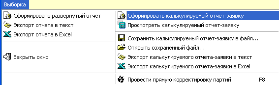
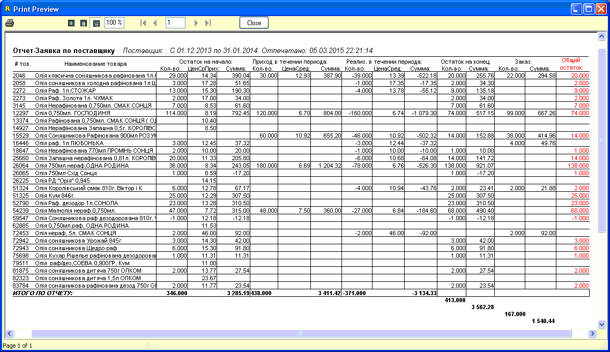
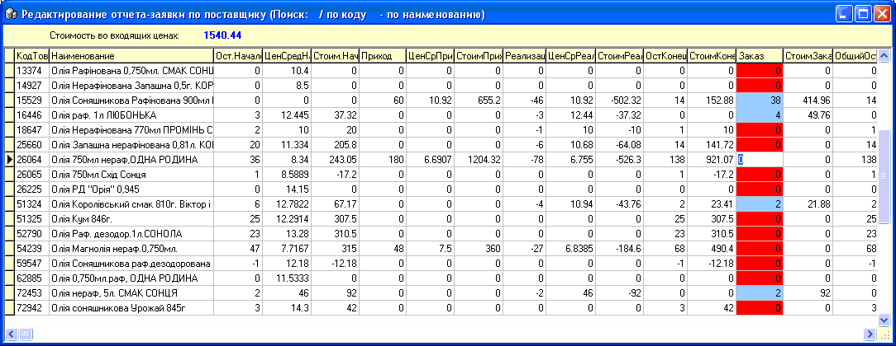

Калькулируемый отчет-заявка - это второй вариант
выполнения отчета "Отчет по поставщику+Заявка+Остатки". Создает отчет,
редактируемый пользователем, с уменьшенным количеством видимых столбцов
(некоторые статьи прихода/расхода товара объединены по логическому принципу).
На конец периода может вычисляться заявка товара и может выводится, по
состоянию на текущий момент, общий партионный остаток товара, как в целом по
магазину, так и по выбранному складу (см.подраздел справки "Критерии и опции
отчета-заявки").
После выбора нужных опция и параметров отбора
отчета, которые описаны в предыдущем подразделе справки, развернутый отчет
вызывается через соответствующий пункт главного меню формы:

Сразу после отбора данных отчет выводится на
предварительный просмотр в том виде, в котором получен, а если было указано
автоматически рассчитать заявку, то программа уже заполнит столбец "Заказ" по
тем товарам, которые согласно выбранных критериев должны быть
заказаны:

Затем закройте предварительный просмотр отчета и
выберите в главном меню "Просмотреть калькулируемый отчет-заявку". Откроется
специальная форма редактирования заявки, в которой вы можете изменять столбец
"Заказ", вверху формы, на панели, видно на какую сумму в последних входящих
ценах уже набран заказ. В этой форме также доступен поиск по коду и по
наименованию товара (подсказка клавиш в заголовке формы).

После окончания редактирования, закройте форму и
снова откроется окно предварительного просмотра отчета-заказа, с уже
отредактированным заказываемым количеством. Если это было указано в опциях, то
на печать будут отобраны только позиции с заказом.
Также, как вы можете увидеть в главном
меню, есть возможность сохранить отчет-заявку в в файл или
загрузить из него (формат хранимых данных *.xml), а также экспортировать
отчет-заявку в Excel или в текстовый файл.